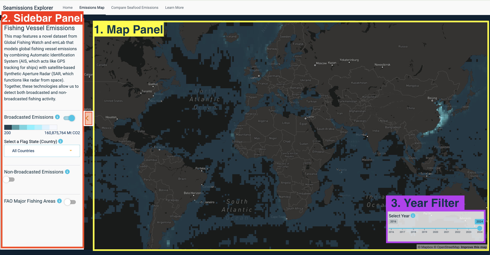
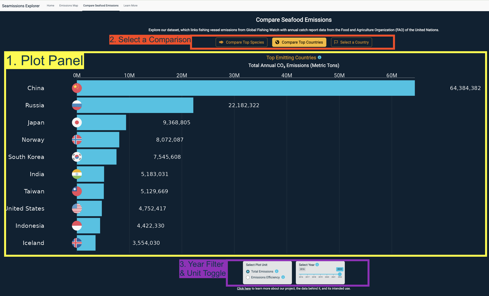

Seamissions Explorer User Guide
1 Seamissions Explorer User Guide
The Seamissions Explorer dashboard is a tool to explore fishing vessel emissions for the global seafood industry. The dashboard links CO2 emissions estimates from Global Fishing Watch’s novel vessel emissions dataset with seafood catch report data from the United Nation Food and Agriculture Organization (FAO).
1.0.0.1 Launch the app: https://emlab-ucsb.shinyapps.io/seamissions-explorer/
1.1 Getting Started
When you open the app, you’ll land on the Home tab, which provides a brief overview of the dashboard’s purpose and quick links to it’s two main tools:
- Fishing Vessel Emissions Map
- Compare Seafood Emissions Tool
The top navigation bar includes four tabs:
- Home - Dashboard overview
- Fishing Vessel Emissions Map - Explore a global map of CO₂ emissions from large-scale fishing vessels, powered by a novel dataset from Global Fishing Watch and emLab.
- Compare Seafood Emissions - Use this tool to compare CO₂ emissions by country and seafood category, combining Global Fishing Watch activity data with FAO catch statistics.
- Learn More - Provides information about the the project, data sources, methods, and key limitations.
1.2 1. Fishing Vessel Emissions Map Tool

The Fishing Vessel Emissions Map is designed to help users explore where emissions from global fishing vessels are concentrated, with the ability to filter by year, country, and vessel type. The tool is comprised of three primary sections:
1.2.1 1.1 The Map Panel:
This is the main visualization area where fishing vessel emissions data are displayed spatially on a global web map powered by Mapbox.
How to use:
- Scroll in or out by scrolling with your mouse on a desktop or by pinching the screen on a mobile device.
- Pan around on the map by clicking and dragging your cursor on your desktop or using your finger to press and drag on a mobile device.
- Hover over a layer to get more information on the tooltip or select an object using your finger on a mobile device.
- Visualize layers using the sidebar menu. Depending on user selections, the map will show either global emissions, country-specific data, or emissions from non-broadcasting (dark fleet) vessels.
How to interpret:
- The color scale represents CO₂ emissions in metric tons, lighter colors are areas with higher CO₂ concentrations.
- Information on the layers and visualization options can be found by clicking on the corresponding blue “i” info icons.
1.2.3 1.3 The Year Filter:
This panel is what determines which year the map is filtered to.
How to use:
- Adjust the year using the horizontal slider. Drag the handle left or right to select the desired year. This will filter all visible layers.
How to interpret:
- Each 1x1 degree pixel (grid cell) for the emissions data is aggregated by year.
1.3 2. Compare Seafood Emissions Tool

The Compare Seafood Emissions tool is designed to help users explore how emissions from different seafood sources vary by country, species, and production volume. It enables side-by-side comparisons to better understand the carbon intensity of different fisheries and seafood types. The tool uses the data set that the Seamissions team created by linking emissions data from Global Fishing Watch with seafood catch report data from the FAO.
The tool is comprised of three primary sections:
1.3.1 2.1 The Plot Panel:
This is the main visualization area where seafood catch emissions data are displayed as bar plots.
How to Use:
- Explore emissions use the controls above the plot to choose your comparison type, year, and unit of measurement.
1.3.2 How to Interpret:
- Each bar represents either total emissions or emissions per ton of seafood catch.
- Plot units are shown in metric tons of CO₂ emissions, either total annual emissions or emissions efficiency (emissions per unit catch) depending on the selected unit.
1.3.3 2.2 Select a Comparison:
This section allows you to choose the type of emissions comparison you’d like to view.
How to Use:
Select a Comparison by clicking on one of the action buttons.
Available comparison plots:
- Compare Top Countries: Displays the top 10 countries with the highest total fishing emissions for the selected year.
- Compare Top Species: Displays the top 10 species groups contributing the most to global fishing emissions.
- Select a Country: Displays all species groups reported by a selected country.
How to interpret:
- These options help highlight the largest contributors to fishing emissions, either by country or species group.
1.3.4 2.3 Year Filter and Unit Toggle
This section includes tools to adjust the year of analysis and choose the emissions unit for comparison.
How to Use:
- Select plot unit by clicking on the desired unit. Unit options:
- Total Emissions: Displays the total annual CO₂ emissions.
- Emissions Efficiency: Displays emissions per metric ton of seafood caught.
- Adjust the year using the horizontal slider. Drag the handle left or right to select the desired year. This will filter the plot to the selected year.
How to Interpret:
- Total emissions: Bar width reflects the total metric tons of CO₂ emissions from fishing vessels, including both broadcasting and non-broadcasting emissions.
- Emissions efficiency: Bar width reflects emissions per metric ton of catch.
- Higher values indicate less efficient fleets (more CO₂ used per ton caught).
- Lower values indicate more efficient fleets (less CO₂ used per ton caught).
1.4 Learn More
Navigate to the learn more tab to learn more about our project, the data behind it, and its intended use.